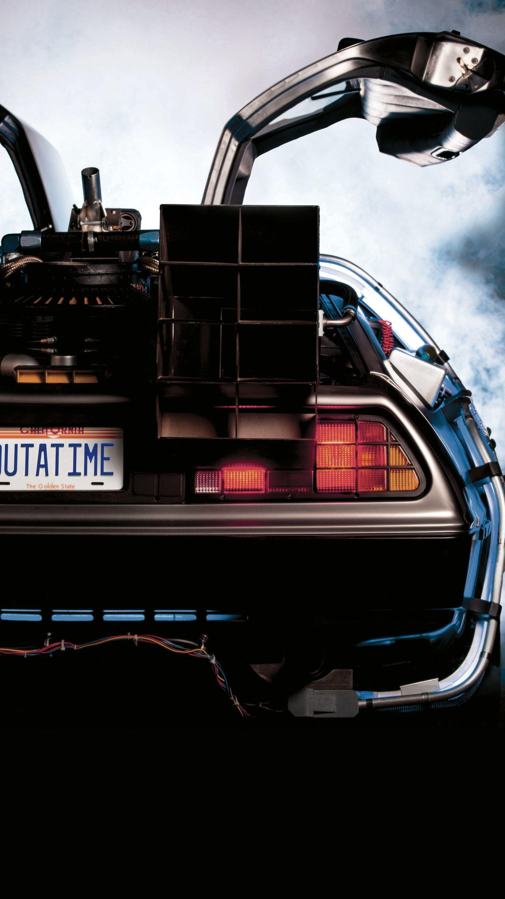

Behind the Scenes
🎬 The role of Marty was first played by Eric Stoltz before Michael J. Fox was cast! 🔧 The DeLorean was chosen because its gull-wing doors made it look futuristic. 🎵 "Power of Love" by Huey Lewis & The News became a legendary movie anthem.
Cultural Impact
The Back to the Future franchise has left a lasting mark on pop culture:
- Back to the Future sneakers
- October 21, 2015, was officially recognized as Back to the Future Day!
- The trilogy continues to inspire movies, TV shows, and even theme park rides.